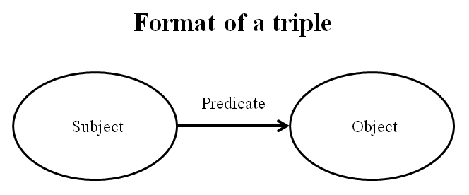
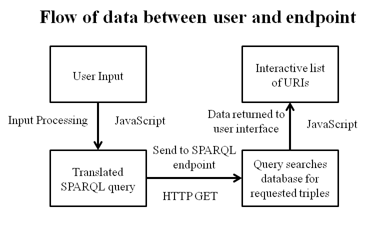
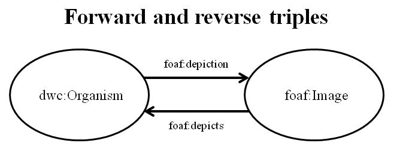

As part of a Dean's Fellow project, we have created a demonstration web application that can be used to query the Bioimages database loaded into an RDF triplestore hosted by the Jean and Alexander Heard Library. To view the Bioimages website as maintained by Dr. Steven J. Baskauf, click the "Learn More" button on the main page. The Bioimages database is available as a resource description framework (RDF) formatted dataset, describing over 13,000 images representing 3318 individuals of 1180 nominal taxa. RDF is a graph based model that links data in a three member relationship called a triple. More detail regarding RDF can be found here.
Interrelationships are represented by graphs which connect various kinds of resources. The predicates that link the resources derive meaning from RDF vocabularies and ontologies. The Bioimages dataset draws upon a number of different vocabularies, two of which include Darwin Core and Darwin-SW which can be further read about here and here respectively. If you would like a more in depth explanation of how ontologies are built, the Web Ontology Language is a good place to start, information for which can be found here. The only limiting factor to the number of ways nodes in the data can be connected is the number of terms in the utilized vocabularies, making the RDF dataset an n-directional graph.
In order to be able to effectively query the Bioimages dataset, we have employed the use of the Sparql Protocol and RDF Querying Language (SPARQL). SPARQL is a querying language tailor-made to retrieve data stored in RDF format and is a World Wide Web Consortium (W3C) standard. More detail regarding SPARQL can be found here. In order to demonstrate the ability to host a queryable SPARQL database in RDF format on the web, we used a web application called Callimachus. Callimachus is an open source linked data management system that has the ability to ingest and house an RDF database. Callimachus maintains our web queryable SPARQL endpoint for the Bioimages dataset. Further reading can be found here.
The interface we have created allows users to query a SPARQL endpoint and retrieve existing information. It is also possible to use the endpoint to construct entailed triples that are not explicitly stated. For example, using SPARQL, we have the ability to construct additional triples in the reverse direction of existing triples.
We have set up the SPARQL endpoint in a way that allows for the incorporation of additional datasets as well as the ability to update all current datasets. Such an ability makes it possible to combine a number of unique data sets and construct queries that could lead to the construction of triples that would not have existed if the datasets were maintained separately. This embodies the goal of linked data, and we have both set up a simple interface to query linked data, as well as primed the Vanderbilt Library to host additional RDF datasets.